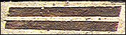
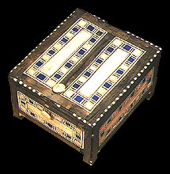

|
Wood
The ancient Egyptians made furniture out of wood even though wood was not very common in their country. They often used special woods like ebony and cedar to make furniture for the pharaoh and wealthy people.

This is a box made of ebony with ivory decorations.
back to explore menu...
|